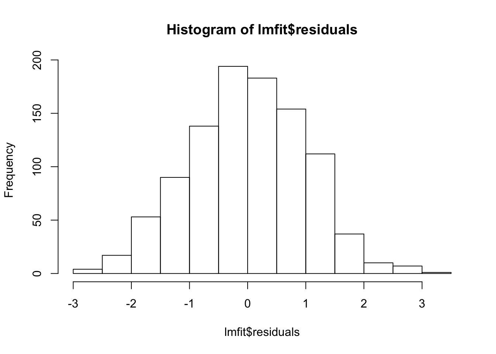
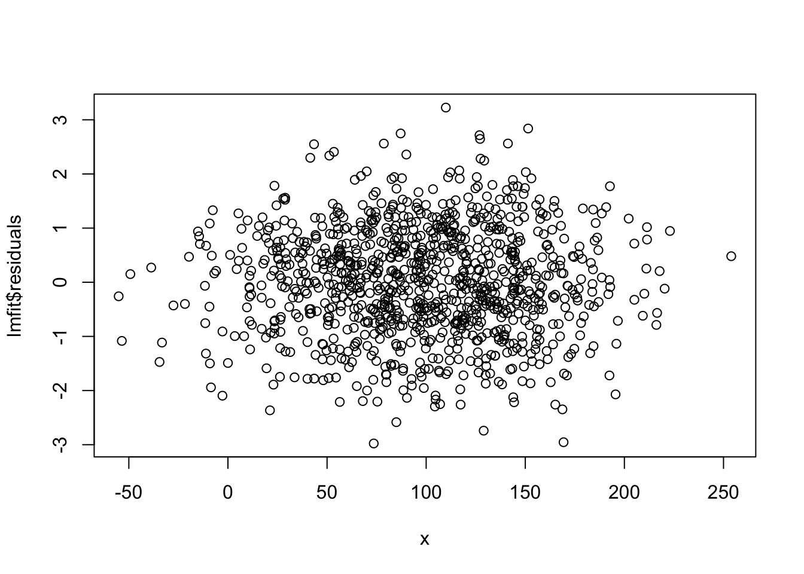
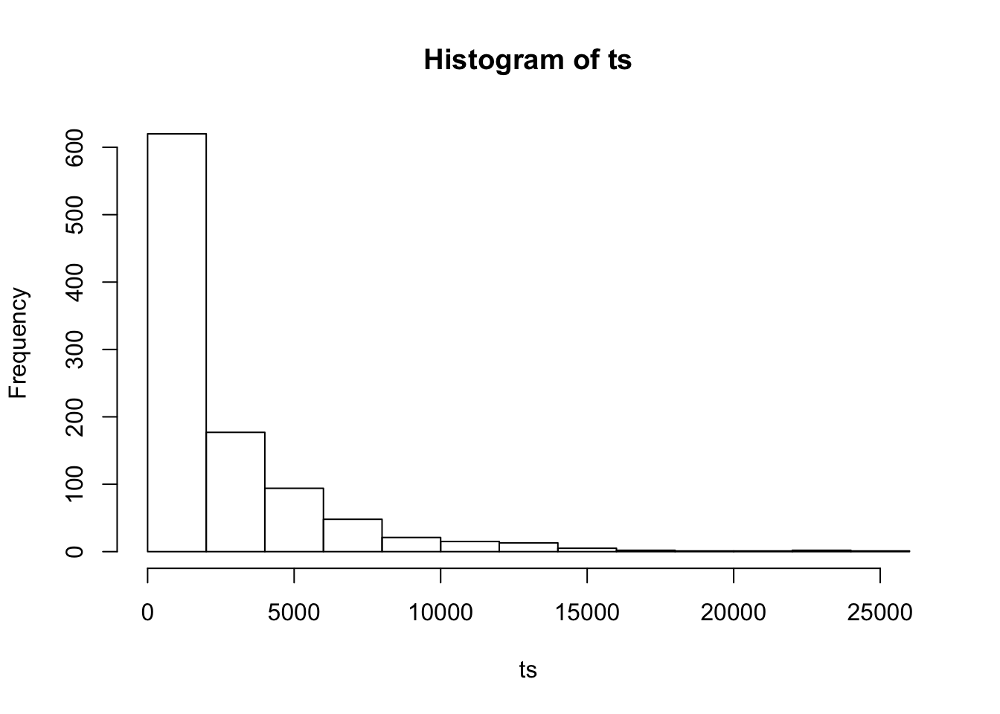
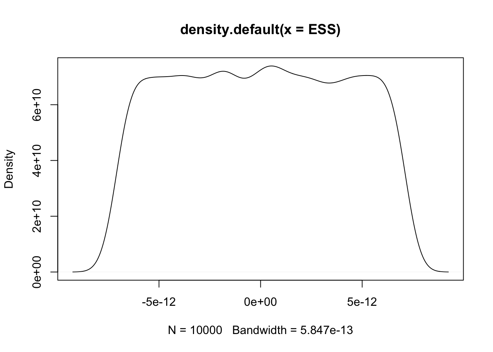
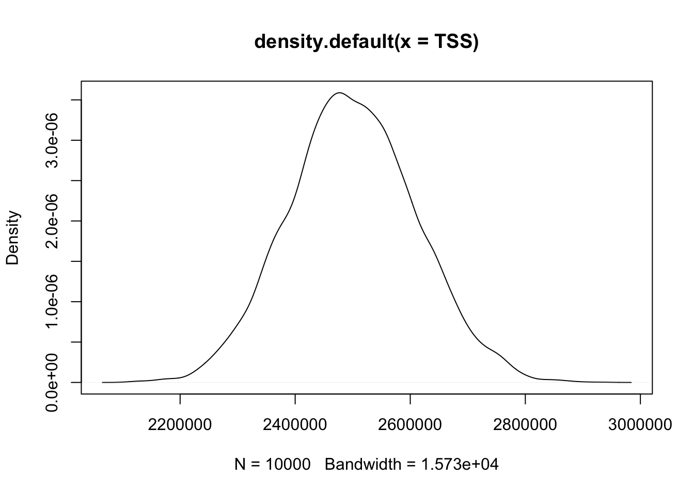
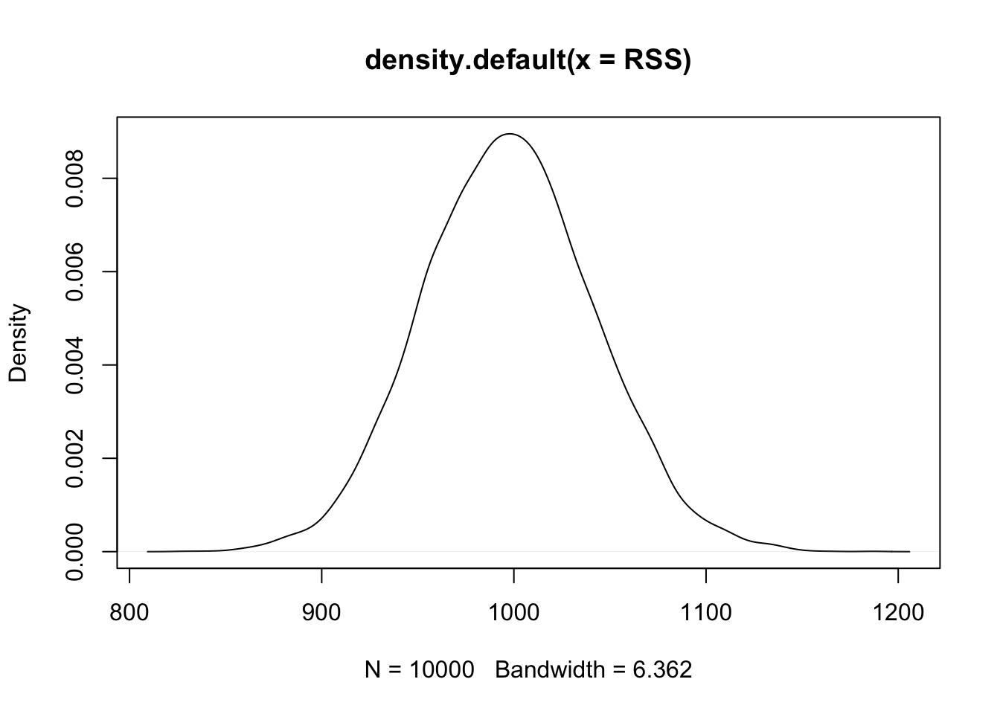
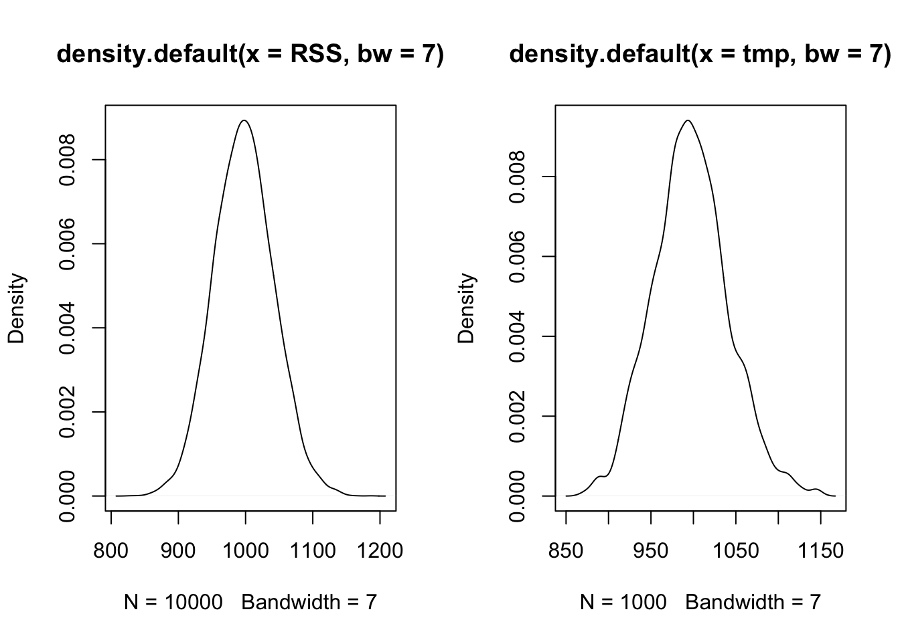
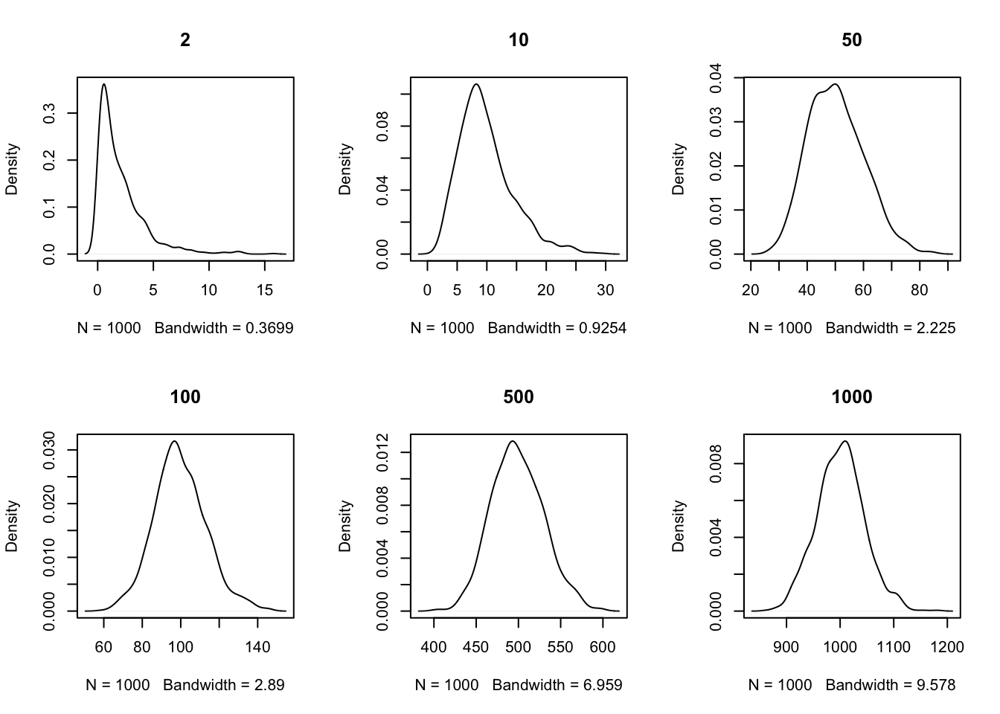
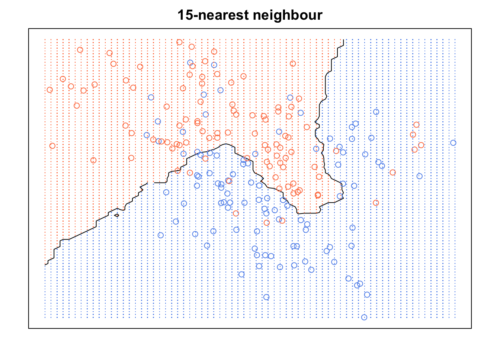

Notes on: Introduction to Statistical Learning
Houston R Users
2017-02-26
1 Chapter 2
1.1 Notes
# we have normally dist x
x = rnorm(1000, mean = 100, sd = 50)
errors = rnorm(1000, mean = 0, sd = 1)
y = x + errors
library(broom)
lmfit = lm(y ~ x)
tmp = summary(lmfit)
lmfit2 = tidy(lmfit)
hist(lmfit$residuals)
plot(x, lmfit$residuals)
# ex1, checking is TS is chi square
ts = (y - mean(y))^2
hist(ts)
# ex2
library(broom)
tmp = lapply(1:10000, function(x){
x = rnorm(1000, mean = 100, sd = 50)
errors = rnorm(1000, mean = 0, sd = 1)
y = x + errors
lmfit = lm(y ~ x)
tss = sum((y - mean(y))^2)
rss = sum(lmfit$residuals^2)
ess = sum(lmfit$fitted.values - mean(y))
return(list(tss = tss, rss = rss, ess = ess))
})
TSS = sapply(tmp, "[[", "tss")
RSS = sapply(tmp, "[[", "rss")
ESS = sapply(tmp, "[[", "ess")
plot(density(ESS))
plot(density(TSS))
plot(density(RSS))
tmp = rchisq(1000, df = 1000 - 2)
par(mfrow = c(1, 2))
plot(density(RSS, bw = 7))
plot(density(tmp, bw = 7))
par(mfrow = c(2, 3))
dfs = c(2, 10, 50, 100, 500, 1000 )
for(df in dfs)
print(plot(density(rchisq(1000, df = df)), main = df))## NULL## NULL## NULL## NULL## NULL
## NULL1.2 Example of KNN
library(pacman)
p_load(ElemStatLearn, class)
x <- mixture.example$x
g <- mixture.example$y
xnew <- mixture.example$xnew
mod15 <- knn(x, xnew, g, k=15, prob=TRUE)
prob <- attr(mod15, "prob")
prob <- ifelse(mod15=="1", prob, 1-prob)
px1 <- mixture.example$px1
px2 <- mixture.example$px2
prob15 <- matrix(prob, length(px1), length(px2))
par(mar=rep(2,4))
contour(px1, px2, prob15, levels=0.5, labels="", xlab="", ylab="", main=
"15-nearest neighbour", axes=FALSE)
points(x, col=ifelse(g==1, "coral", "cornflowerblue"))
gd <- expand.grid(x=px1, y=px2)
points(gd, pch=".", cex=1.2, col=ifelse(prob15>0.5, "coral", "cornflowerblue"))
box()
END